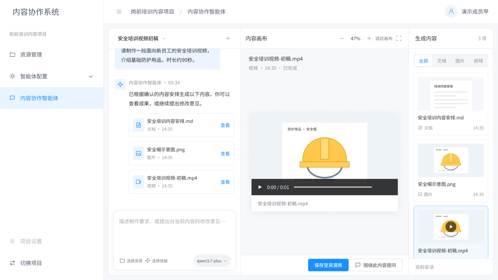
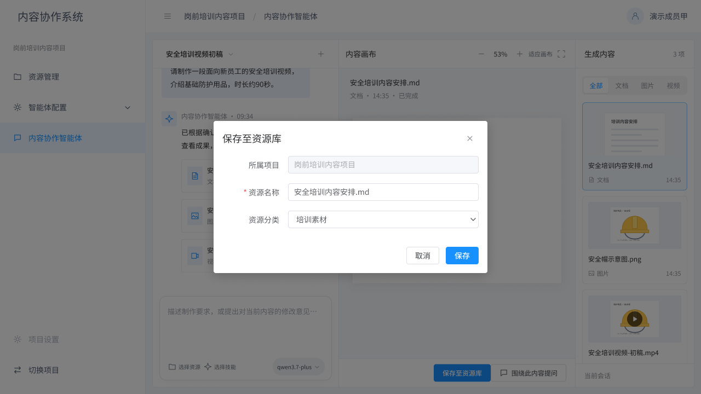

<!doctype html><html lang="zh-CN"><meta charset="utf-8"><title>PG11 · Figma效果图预览</title><style>body{font:14px "Microsoft YaHei",sans-serif;margin:0;background:#f5f7fa;color:#303133}header{padding:24px 40px;background:white;border-bottom:1px solid #ebeef5}h1{font-size:22px;margin:0 0 12px}a{color:#1890ff;text-decoration:none}main{max-width:1320px;margin:auto;padding:24px}section{background:white;margin-bottom:28px;border:1px solid #e4e7ed;border-radius:8px;overflow:hidden}h2{font-size:16px;padding:16px 20px;margin:0;display:flex;justify-content:space-between}img{display:block;width:100%;height:auto}p{color:#909399}.links{display:flex;gap:18px;flex-wrap:wrap}</style><header><h1>内容协作智能体 · Figma效果图</h1><div class="links"><a href="https://www.figma.com/design/EjC3IegY9kqwAAmg5M5mrR" target="_blank">打开可编辑设计稿 ↗</a><a href="#s32">01 · 初始状态</a><a href="#s62">02 · 协作状态 · 文档</a><a href="#s52">03 · 协作状态 · 图片</a><a href="#s42">04 · 协作状态 · 视频</a><a href="#s82">05 · 历史会话筛选</a><a href="#s72">06 · 保存至资源库</a><a href="#s92">07 · 保存成功</a></div><p>v1 · 2026-09-15 · 7个关键状态 · 中文字体采用思源黑体 · 静态效果图，待评审</p></header><main><section id="s32"><h2>01 · 初始状态<span><a href="https://www.figma.com/design/EjC3IegY9kqwAAmg5M5mrR?node-id=3-2" target="_blank">Figma画板 ↗</a>　<a href="效果图/01_初始状态.png" target="_blank">查看原图 ↗</a></span></h2><a href="效果图/01_初始状态.png" target="_blank"></a></section><section id="s62"><h2>02 · 协作状态 · 文档<span><a href="https://www.figma.com/design/EjC3IegY9kqwAAmg5M5mrR?node-id=6-2" target="_blank">Figma画板 ↗</a>　<a href="效果图/02_协作状态_文档.png" target="_blank">查看原图 ↗</a></span></h2><a href="效果图/02_协作状态_文档.png" target="_blank"></a></section><section id="s52"><h2>03 · 协作状态 · 图片<span><a href="https://www.figma.com/design/EjC3IegY9kqwAAmg5M5mrR?node-id=5-2" target="_blank">Figma画板 ↗</a>　<a href="效果图/03_协作状态_图片.png" target="_blank">查看原图 ↗</a></span></h2><a href="效果图/03_协作状态_图片.png" target="_blank"></a></section><section id="s42"><h2>04 · 协作状态 · 视频<span><a href="https://www.figma.com/design/EjC3IegY9kqwAAmg5M5mrR?node-id=4-2" target="_blank">Figma画板 ↗</a>　<a href="效果图/04_协作状态_视频.png" target="_blank">查看原图 ↗</a></span></h2><a href="效果图/04_协作状态_视频.png" target="_blank"></a></section><section id="s82"><h2>05 · 历史会话筛选<span><a href="https://www.figma.com/design/EjC3IegY9kqwAAmg5M5mrR?node-id=8-2" target="_blank">Figma画板 ↗</a>　<a href="效果图/05_历史会话筛选.png" target="_blank">查看原图 ↗</a></span></h2><a href="效果图/05_历史会话筛选.png" target="_blank"></a></section><section id="s72"><h2>06 · 保存至资源库<span><a href="https://www.figma.com/design/EjC3IegY9kqwAAmg5M5mrR?node-id=7-2" target="_blank">Figma画板 ↗</a>　<a href="效果图/06_保存至资源库.png" target="_blank">查看原图 ↗</a></span></h2><a href="效果图/06_保存至资源库.png" target="_blank"></a></section><section id="s92"><h2>07 · 保存成功<span><a href="https://www.figma.com/design/EjC3IegY9kqwAAmg5M5mrR?node-id=9-2" target="_blank">Figma画板 ↗</a>　<a href="效果图/07_保存成功.png" target="_blank">查看原图 ↗</a></span></h2><a href="效果图/07_保存成功.png" target="_blank"></a></section></main></html>
